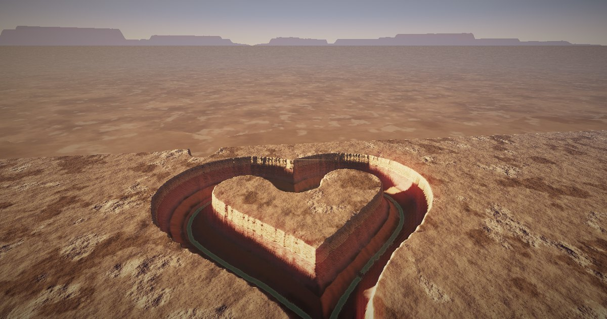

深時 Deep Time
在沙漠台地上畫一條線，看六百萬年的雨把它刻成峽谷。峽谷的走向、深度、支流與裸露岩層全由侵蝕模擬算出。Draw a line on a desert plateau and watch six million years of rain carve it into a canyon. Its course, depth, tributaries and exposed strata are all computed by an erosion simulation.

需要桌面瀏覽器與 WebGL2。Desktop browser with WebGL2 required.
狀態：v4 已上線，最後一輪審查與定稿尚未完成。Status: v4 is live; the final review and wrap-up are not done yet.
- 舊版 Earlier versions: v3 · v2 · v1
- 原型 Prototypes